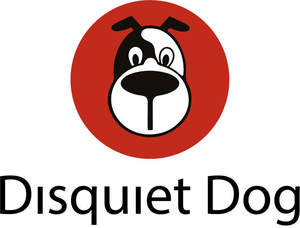
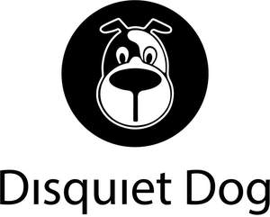
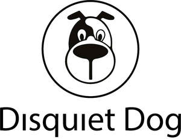

Trade Mark Journal No.2025/014 4 April 2025
UK00004174757 17 March 2025 (9,35,41,42)
Mark 1

Mark 2

Mark 3

Mark 4
Mark 5
- Class 9
- Website development software; Web site development software; Software for designing online advertising on websites; Software for embedding online advertising on websites; USB web keys for automatically launching pre-programmed website URLs; Servers for web hosting; Digital music [downloadable] provided from mp3 web sites on the internet; Blog software; Web server software.
- Class 35
- Marketing; Advertising and marketing; Advertising and marketing consultancy; Promotional marketing; Influencer marketing; Advertising and marketing services; Marketing consultancy; Product marketing; Affiliate marketing; Marketing consulting; Digital marketing; Advertising, marketing and promotion services; Marketing, advertising and promotion services; Advertising, marketing and promotional services; Advertising, promotional and marketing services; Marketing, advertising, and promotional services; Marketing research; Online marketing; Internet marketing; Marketing services; Business marketing consultancy; Marketing forecasting; Financial marketing; Referral marketing; Marketing analysis; On-line advertising and marketing services; Marketing studies; Targeted marketing; Business marketing services; Advertising copywriting; Distribution of advertising, marketing and promotional material; Investigations of marketing strategy; Marketing information; Direct marketing; Promotion, advertising and marketing of on-line websites; Planning of marketing strategies; Marketing advice; Direct marketing consulting; Consultancy services relating to advertising, publicity and marketing; Dissemination of advertising, marketing and publicity materials; Marketing research services; Research services relating to advertising and marketing; Marketing assistance; Event marketing; Design of marketing surveys; Marketing management advice; Database marketing; Marketing agency services; Promotion [advertising] of business; Business marketing consulting services; Development of marketing concepts; Marketing plan development ; Advertising, marketing and promotional consultancy, advisory and assistance services; Consultancy services in the field of affiliate marketing; Copywriting for advertising and promotional purposes; Direct marketing services; Marketing analysis services; Modeling for advertising or sales promotion; Advice in the field of business management and marketing; Trade marketing [other than selling]; Consultancy relating to marketing; Creative marketing plan development services; Promotional marketing services using audiovisual media; Modelling for advertising or sales promotion; Business marketing consultation services; Modeling services for advertising or sales promotion; Recruitment services for sales and marketing personnel; Marketing advisory services; Consultancy regarding advertising communications strategy; Development of marketing strategies and concepts; Advertising services for the promotion of e-commerce; Planning services for marketing studies; Consulting services in the field of Internet marketing; Business advice relating to strategic marketing; Marketing research and analysis; Marketing research or analysis; Marketing consultation services; Providing marketing consulting in the field of social media; Preparation of marketing surveys; Business advice relating to marketing; Marketing (Business advice relating to -); Advertising and marketing services provided by means of social media; Consumer profiling for commercial or marketing purposes; Professional consultancy relating to marketing; Advertising; Analysis of marketing trends; Advertising and marketing services provided via communications channels; Market research and marketing studies; Business consultancy services relating to the marketing of fund raising campaigns; Providing business marketing information; Advertising planning; Brand creation services (advertising and promotion); Publicity and sales promotion services; Developing promotional campaigns for business; Consulting services relating to marketing; Advertising and marketing services provided by means of blogging; Marketing in the framework of software publishing; Providing advice in the field of business management and marketing; Copywriting; Consultancy relating to demographics for marketing purposes; Advertising and promotion services; Information or enquiries on business and marketing; Advertising research; Marketing services in the field of travel; Advertising and publicity; Publicity and advertising; Publicity and sales promotion; Consultancy regarding advertising communication strategies; Advertising and promotional services; Promotional and advertising services; Promotional advertising services; Rental of all publicity and marketing presentation materials; Advertising and publicity services; Conducting of marketing studies; Conducting marketing studies; Advice relating to marketing management; Search engine marketing services; Administration relating to marketing; Sales promotion using audiovisual media; Telephone marketing services [not selling]; Consultancy relating to business advertising; Modelling and models for advertising or sales promotion; Estimations for marketing purposes; Analysis relating to marketing; Preparation of marketing plans; Consulting in sales techniques and sales programmes; Business advice relating to marketing management consultations; Recruitment advertising; Real estate marketing analysis; Marketing services in the field of web site traffic optimization; Marketing services in the field of dentistry; Market research for advertising; Marketing services in the field of restaurants; Promotion [advertising] of travel; Real estate marketing; Development of advertising concepts; Development of promotional campaigns; Planning services for advertising; Advertising research services; Preparation of reports for marketing; Advisory services relating to marketing; Design of advertising brochures; Digital advertising services; Preparation of advertising campaigns; Sales promotion; Organisation of customer loyalty programs for commercial, promotional or advertising purposes; Providing business information via a web site; Providing business information via a website; Website traffic optimisation; Website traffic optimization; Web site traffic optimisation; Web site traffic optimization; Compilation of advertisements for use as web pages on the Internet; Compilation of advertisements for use on internet web pages; Advertising of business web sites; Compilation of advertisements for use as web pages; Providing marketing information via websites; On-line promotion of computer networks and websites; Promoting the designs of others by means of providing online portfolios via a website; Promoting the artwork of others by means of providing online portfolios via a website; Composing advertisements for use as web pages; Promoting the music of others by means of providing online portfolios via a website; Business information services provided online from a computer database or the internet; Rental of advertising space on web sites; Business information services provided on-line from a computer database or the internet; Providing an on-line commercial information directory on the internet; Providing a directory of third party web sites to facilitate business transactions; Providing a searchable online advertising guide featuring the goods and services of other on-line vendors on the internet.
- Class 41
- Training courses in strategic planning relating to advertising, promotion, marketing and business; Training services relating to retail marketing; Education and training; Education, teaching and training; Training and education services; Education and training services; Education and training consultancy; Vocational education and training services; Provision of training and education; Provision of education and training; Computer education training; Vocational training; Linguistic education and training services; Education services relating to vocational training; Computer education training services; Training; Education; Training or education services in the field of life coaching; Career counselling relating to education and training; Educational and training services; Guidance (Vocational -) [education or training advice]; Vocational guidance [education or training advice]; Career counselling [training and education advice]; Medical training and teaching; Vocational training services; Vocational education; Career and vocational training; Vocational training courses (Provision of -); Teacher training services; Education and training in the field of business management; Vocational skills training; Training courses; Employment training; Career advisory services (education or training advice); Education and training in the field of occupational health and safety; Education and training services in the field of occupational health and safety; Education services relating to business training; Training of teachers; Education and instruction; Education and training in the field of music and entertainment; Vocational skills training (Provision of -); Academy services (Education -); Education academy services; Academy education services; Training and further training consultancy; Training and instruction; Providing of training, teaching and tuition; Teaching of diet education; Postgraduate training courses; Education and training in the field of automotive engineering; Academies [education]; Education and instruction services; Provision of training courses; Training courses (Provision of -); Educational and training programs in the field of risk management; Provision of training courses in personal development; Training services; Education academy services for teaching construction drafting; Education and training services in relation to business management; Career counseling [education]; Instructional and training services; Educational services for providing courses of education; Organisation of training courses; Providing courses of training; Consultancy relating to vocational skills training; Educational and training services relating to healthcare; Education academy services for teaching acting; Education academy services for teaching languages; Education services relating to the training of personnel in food technology; Provision of education courses; Consultancy services relating to the education and training of management and of personnel; Arrangement of training courses in teaching institutes; Educational and training services relating to sport; Coaching [training]; Courses (Training -) relating to research and development; Residential training courses; Training consultancy; Education services; Provision of training courses for young people in preparation for employment; Residential education courses; Recreation and training services; Life coaching (training); Training in the development of computer programs; Language training; Organisation of training seminars; Courses (Training -) relating to management; Provision of training; Practical training services; Publication of educational and training guides; Adult training; Providing training and educational examination for certification purposes; Business training; Consultancy services relating to the development of training courses; Services of schools [education]; Personal development training; Educational services relating to sales training; Education services for imparting language teaching methods; University education services; Provision of facilities for employment skills training; Arranging of training courses; Management training services; Training in business skills; Organising of education seminars; Education courses relating to automation; Providing entertainment information via a website; Providing video entertainment via a website; Providing multi-media entertainment via a website; Educational information provided on-line from a computer database or the internet; Providing entertainment in the nature of film clips via a website; Video taping; Production of video tapes and video discs; Video editing; Video production; Video tape editing; Editing of video recordings; Audio and video production, and photography; Audio and video recording services; Video tape production; Video game services; Video recording services; Audio, film, video and television recording services; Production of video and audio recordings; Production of video recordings; Audio, video and multimedia production, and photography; Audio and video editing services; Production of pre-recorded video films; Video film production; Video and DVD film production; Exhibition of video films; Providing audio or video studios; Production of video films; Exhibition of video film sound tracks; Hire of video recordings; Recording, film, video and television studio services.
- Class 42
- Website design; Homepage and webpage design; Website hosting services; Website design services; Web site design; Computer website design; Web site hosting services; Website design consultancy; Web site design services; Web site design consultancy; Internet web site design services; Web page design services; Website development services; Hosting an online website for creating and hosting micro websites for businesses; Webpage design services; Website design and development; Web site design and creation services; Website development for others; Hosting web sites; Hosting of web sites; Hosting of websites; Hosting websites; Web portal design; Hosting of customized web pages; Hosting websites on the Internet; Design of web sites; Web hosting; Design of home pages and web sites; Design of websites; Design of homepages and websites; Maintenance of websites and hosting on-line web facilities for others; Design of web pages; Providing information in the field of interior design via a web site; Graphic design for the compilation of web pages on the internet; Rental of software for website development; Hosting of mobile websites; Website usability testing services; Hosting web portals; Hosting of web portals; Hosting computer websites; Computer site design; Website load testing services; Compilation of web pages for the Internet; Creation of internet web sites; Hosting online web facilities for others for sharing online content; Providing temporary use of on-line non-downloadable software for web site development; Programming of software for website development; Design and updating of home pages and web pages; Design and creation of homepages and web pages; Providing information in the field of interior design via a website; Providing information in the field of architectural design via a website; Web hosting services; Creating electronically stored web pages for online services and the internet; Design and development of homepages and websites; Hosting on-line web facilities for others; Programming of web pages; Hosting the web sites of others; Providing information relating to computer technology and programming via a website ; Providing information relating to computer technology and programming via a website; Providing temporary use of non-downloadable software applications accessible via a web site; Commissioned writing of computer programs, software and code for the creation of web pages on the Internet; Hosting the computer sites (web sites) of others; Hosting a website for the electronic storage of digital photographs and videos; Consultancy relating to the design of home pages and Internet sites; Design and construction of homepages and websites; Design of homepages and Internet pages; Providing information on clinical studies via an interactive website; Consultancy with regard to webpage design; Consultancy relating to the design of homepages and Internet pages; Hosting on-line web facilities for others for managing and sharing on-line content; Design and graphic arts design for the creation of web pages on the Internet; Design, creation and programming of web pages; Creating websites; Design and creation of web sites for others; Installing web pages on the internet for others; Design and creation of homepages and Internet pages; Designing websites for advertising purposes; Consultancy relating to the creation and design of websites for e-commerce; Interactive hosting services which allow the users to publish and share their own content and images online; Design of Internet pages; Design and creating web sites for others; Creation and maintenance of web sites; Design and development of software for website development.
Disquiet Dog Ltd